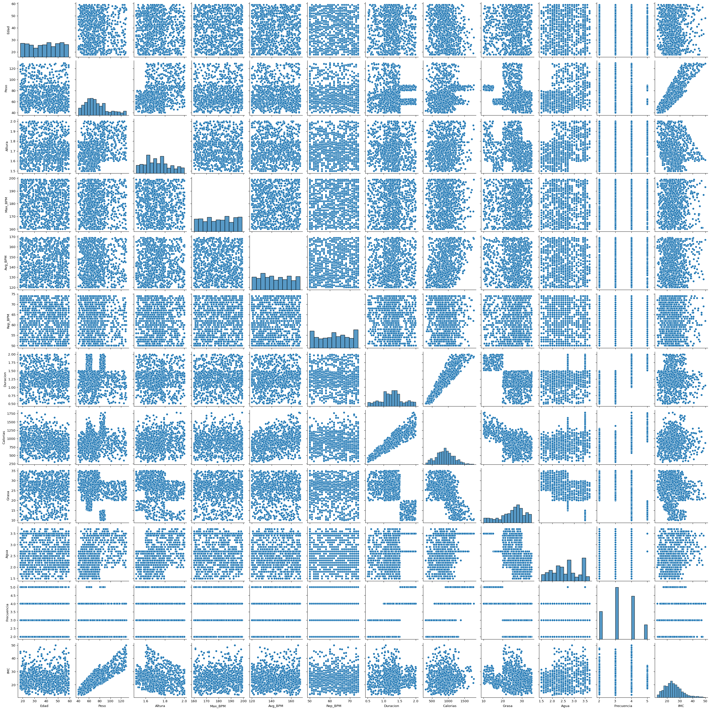

datos_numericos = datos.select_dtypes("number")
correlaciones = datos_numericos.corr()
fig = go.Figure()
no_plot = fig.add_trace(
go.Heatmap(x = correlaciones.columns, y = correlaciones.index, z = correlaciones,
colorscale = 'RdBu', zmin = -1, zmax = 1,
text = correlaciones.round(2),
texttemplate = "%{text}")
)
no_plot = fig.update_layout(
yaxis_autorange = 'reversed'
)
fig.show()Análisis Multivariado
Matriz de Correlaciones
Gráfico de Pares
import seaborn as sns
sns.pairplot(datos_numericos)